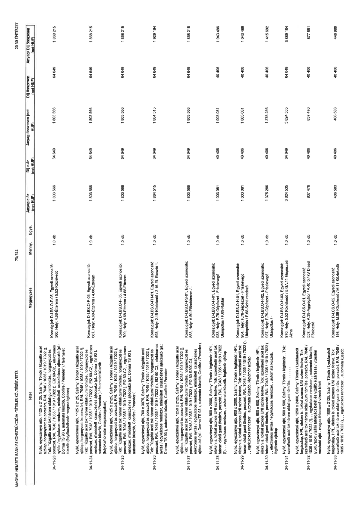

| Tétel | Megjegyzés | Menny. | Egys. | Anyag e.ár (net HUF) | Díj e.ár (net HUF) | Anyag összesen (net HUF) | Díj összesen (net HUF) | Anyag+Díj összesen (net HUF) |
|---|---|---|---|---|---|---|---|---|
| 34-11-23 Nyíló, egyszárnyú ajtó, 1125 x 2125, Szárny: Tömör / tűzgátló acél ajtólap, horganyzott és porszórt, RAL 7048 / 1035 / 1019 / 7022 (!), Tok: Tűzgátló acél tok három oldali gumi tömítés, horganyzott és porszórt, RAL 7048 / 1035 / 1019 / 7022 (!), EI2 60-C2, „ elektromos nyitás / egykulcsos rendszer, minősített csúszósínes ajtócsukó (pl.: Dorma TS 93 ), automata küszöb, Coolfire / Peneder / felemelet küszöb (folyóka/hőhatár magasságában) | Konszig.jel: D-I.BS-O-F-05, Egyedi azonosító: 560, Hely: 4.68-Étterm / 5.52-Közlekedő | 1,0 | db | 1 803 566 | 64 649 | 1 803 566 | 64 649 | 1 868 215 |
| 34-11-24 Nyíló, egyszárnyú ajtó, 1125 x 2125, Szárny: Tömör / tűzgátló acél ajtólap, horganyzott és porszórt, RAL 7048 / 1035 / 1019 / 7022 (!), Tok: Tűzgátló acél tok három oldali gumi tömítés, horganyzott és porszórt, RAL 7048 / 1035 / 1019 / 7022 (!), EI2 60-C2, „ egykulcsos rendszer, minősített csúszósínes ajtócsukó (pl.: Dorma TS 93 ), automata küszöb, Coolfire / Peneder / felemelet küszöb (folyóka/hőhatár magasságában) | Konszig.jel: D-I.BS-O-F-05, Egyedi azonosító: 687, Hely: 4.68-Étterm / 4.68-Étterm | 1,0 | db | 1 803 566 | 64 649 | 1 803 566 | 64 649 | 1 868 215 |
| 34-11-25 Nyíló, egyszárnyú ajtó, 1125 x 2125, Szárny: Tömör / tűzgátló acél ajtólap, horganyzott és porszórt, RAL 7048 / 1035 / 1019 / 7022 (!), Tok: Tűzgátló acél tok három oldali gumi tömítés, horganyzott és porszórt, RAL 7048 / 1035 / 1019 / 7022 (!), EI2 60-C2, „ egykulcsos rendszer, minősített csúszósínes ajtócsukó (pl.: Dorma TS 93 ), automata küszöb, Coolfire / Peneder ( | Konszig.jel: D-I.BS-O-F-05, Egyedi azonosító: 709, Hely: 4.68-Étterm / 4.68-Étterm | 1,0 | db | 1 803 566 | 64 649 | 1 803 566 | 64 649 | 1 868 215 |
| 34-11-26 Nyíló, egyszárnyú ajtó, 760 x 3075, Szárny: Tömör / tűzgátló acél ajtólap, horganyzott és porszórt, RAL 7048 / 1035 / 1019 / 7022 (!), Tok: Tűzgátló acél tok három oldali gumi tömítés, horganyzott és porszórt, RAL 7048 / 1035 / 1019 / 7022 (!), EI2 60-C2, „ elektromos nyitás / egykulcsos rendszer, minősített csúszósínes ajtócsukó (pl.: Dorma TS 93 ), automata küszöb, Coolfire / Peneder | Konszig.jel: D-I.BS-O-FH-01, Egyedi azonosító: 693, Hely: 2.15-Közlekedő / 2.16-El. Elosztó 1. | 1,0 | db | 1 864 515 | 64 649 | 1 864 515 | 64 649 | 1 929 164 |
| 34-11-27 Nyíló, egyszárnyú ajtó, 1250 x 2125, Szárny: Tömör / tűzgátló acél ajtólap, horganyzott és porszórt, RAL 7048 / 1035 / 1019 / 7022 (!), Tok: Tűzgátló acél tok három oldali gumi tömítés, horganyzott és porszórt, RAL 7048 / 1035 / 1019 / 7022 (!), EI2 60 S200-C4, „ elektromos nyitás / egykulcsos rendszer, minősített csúszósínes ajtócsukó (pl.: Dorma TS 93 ), automata küszöb, Coolfire / Peneder ( | Konszig.jel: D-I.BS-O-FS-01, Egyedi azonosító: 883, Hely: A.59-Eladóterem / - | 1,0 | db | 1 803 566 | 64 649 | 1 803 566 | 64 649 | 1 868 215 |
| 34-11-28 Nyíló, egyszárnyú ajtó, 900 x 2000, Szárny: Tömör / légtömör, HPL, éleken is, tokkal azonos UNI színre festve, Tok: szerelhető acél tok három oldali gumi tömítés, porszórt, RAL 7048 / 1035 / 1019 / 7022 (!), „ egykulcsos rendszer, „ automata küszöb, légtömör ajtólap | Konszig.jel: D-I.BS-O.H-01, Egyedi azonosító: 983, Hely: F.79-Gépészet - Frisslevegő Utánpótlás / F.69-Raktár | 1,0 | db | 1 003 081 | 40 406 | 1 003 081 | 40 406 | 1 043 486 |
| 34-11-29 Nyíló, egyszárnyú ajtó, 900 x 2000, Szárny: Tömör / légtömör, HPL, éleken is, tokkal azonos UNI színre festve, Tok: szerelhető acél tok három oldali gumi tömítés, porszórt, RAL 7048 / 1035 / 1019 / 7022 (!), „ egykulcsos rendszer, „ automata küszöb, légtömör ajtólap | Konszig.jel: D-I.BS-O.H-01, Egyedi azonosító: 984, Hely: F.79-Gépészet - Frisslevegő Utánpótlás / F.68-Szinti rendező | 1,0 | db | 1 003 081 | 40 406 | 1 003 081 | 40 406 | 1 043 486 |
| 34-11-30 Nyíló, egyszárnyú ajtó, 600 x 600, Szárny: Tömör / légtömör, HPL, éleken is, tokkal azonos UNI színre festve, Tok: szerelhető acél tok három oldali gumi tömítés, porszórt, RAL 7048 / 1035 / 1019 / 7022 ( ), „ elektromos nyitás / egykulcsos rendszer, „ automata küszöb, légtömör ajtólap | Konszig.jel: D-I.BS-O.H-02, Egyedi azonosító: 987, Hely: F.79-Gépészet - Frisslevegő Utánpótlás / - | 1,0 | db | 1 375 286 | 40 406 | 1 375 286 | 40 406 | 1 415 692 |
| 34-11-31 Nyíló, egyszárnyú ajtó, 500 x 500, Szárny: Tömör / légtömör, Tok: szerelhető acél tok három oldali gumi tömítés, , , , , , , , | Konszig.jel: D-I.BS-O.H-03, Egyedi azonosító: 970, Hely: 5.52-Közlekedő / 5.GA.11-Gépészeti Akna | 1,0 | db | 3 824 535 | 64 649 | 3 824 535 | 64 649 | 3 889 184 |
| 34-11-32 Nyíló, egyszárnyú ajtó, 1250 x 2400, Szárny: Tömör / Lyukfuratolt forgácslap, HPL, éleken is, tokkal azonos UNI színre festve, Tok: szerelhető acél tok három oldali gumi tömítés, porszórt, RAL 7048 / 1035 / 1019 / 7022 (!), „ egykulcsos rendszer, „ automata küszöb, lyukfuratolt vízálló faforgács betét és vízálló élzárással / víztéri mosható ajtó - magas fröccsenő víznek kitett | Konszig.jel: D-I.CS-O-01, Egyedi azonosító: 557, Hely: A.39-Aggregátor / A.40-0,4kV Diesel Főelosztó | 1,0 | db | 837 476 | 40 406 | 837 476 | 40 406 | 877 881 |
| 34-11-33 Nyíló, egyszárnyú ajtó, 1000 x 2125, Szárny: Tömör / Lyukfuratolt forgácslap, HPL, éleken is, tokkal azonos UNI színre festve, Tok: szerelhető acél tok három oldali gumi tömítés, porszórt, RAL 7048 / 1035 / 1019 / 7022 (!), „ egykulcsos rendszer, „ automata küszöb, | Konszig.jel: D-I.CS-O-02, Egyedi azonosító: 148, Hely: M.06-Közlekedő / M.11-Közlekedő | 1,0 | db | 406 583 | 40 406 | 406 583 | 40 406 | 446 989 |
